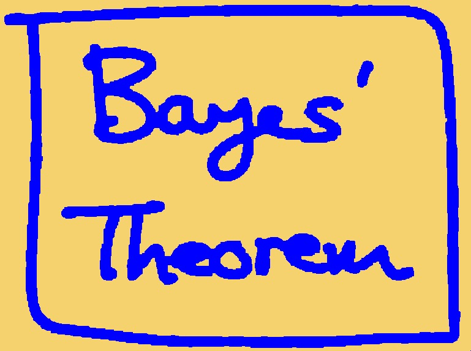
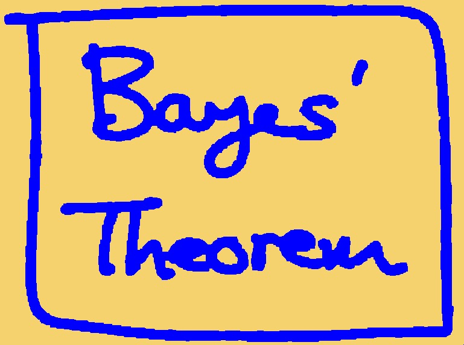
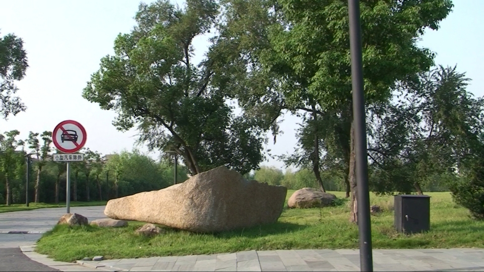

Assignment 2: Depth Estimation From Stereo and Video
Deadline: November 18 (Saturday), 2017 at 5pm
Read carefully: Academic integrity must be strictly followed. Copying-and-pasting from other's code or from any sources is not allowed. Software will be used to detect any form of source code plagiarism. You must write a report in a pdf format as instructed below (and indicate the parts and number clearly). Your submitted code must be grouped/separated into the same parts in the instructions. In your submission, you must provide us with all necessary libraries. The maximum score for completing part 1 until part 4 is 80. More scores are given for submission on part 5.
Part 1: Noise Removal
- Download the code of the graphcuts matlab wrapper from this link: here. Read the readme file to know how to set the edges of the graph.
- Write a matlab program to clean up noise of the image below using an MRF and the binary graphcuts. See the pseudocode in C here.
- Show your result in the report.
- Change the value of the weighting factor (lambda) of the prior
term, and show some different results in your report. You must
state the values of your lambda.
 

Figure 1. Left: Input noisy image. Right: Expected output.
Part 2: Depth from Rectified Stereo Images
- Write a matlab program to estimate a depth map from a pair of
rectified images below using MRF and multiple label graphcuts.


- The depth map groundtruth:

- Show your result in the report.
Part 3: Depth from Stereo:
- Write a matlab program to estimate a depth from a pair of
calibrated images below using MRF and graphcuts. The camera
matrices are available here. Note that, for finding the epipolar
lines using the provided camera matrices, you might want to use
the following equation:


- Note that:
- The images, camera matrices, and last equation are borrowed from this paper: pdf. In this paper, the mathematical notations are different from what I taught in class. However, if you use the notations consistently following the paper, then you should be fine.
- If you want to understand the equation, read this short report here: pdf.
- Show your result in the report.
Part 4: Depth from Video -- Basic:
- Write a program in matlab to estimate depth map from video using this method: Depth Map from Video Sequence.
- For the input, use a video you can download from: here. You need to process only one set of data.
- The camera parameters of the video are provided in the zipped file in the download.
- The minimum number of frames to process is 10 frames. However, the grading will include the quality of your depth map, and the more frames you process, the higher the quality of your depth.
- Unlike the original steps in the paper, in this part you only need to implement the initialization and bundle optimization steps.
- Show some of your results (minimum 10 depth maps) in your report.
- An example of the expected result:


Part 5: Depth from Video -- Advanced:
You will receive more scores if you include the following implementation in your submission. To be graded, you must provide some explanation about your implementation and results in your report. You can choose any of the options below:
- Full implementation of the paper Depth Map from Video Sequence (all steps) on a full set of the provided video clip.
- Find the drawbacks of the paper, and implement your solutions. For this, in the report, you must explain the drawbacks, show the evidence, discuss how your solutions solve the drawback, and show the improved results.
Submission:
Submit your codes and report via IVLE. Again, your codes must be grouped/separated based on the parts above. The report must be in a pdf format.